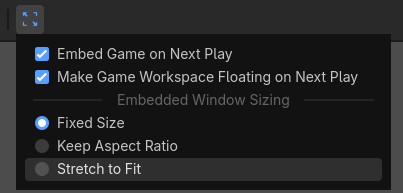
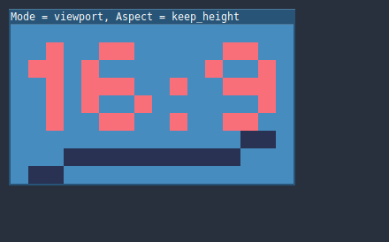

Multiple resolutions
The problem of multiple resolutions
Developers often have trouble understanding how to best support multiple resolutions in their games. For desktop and console games, this is more or less straightforward, as most screen aspect ratios are 16:9 and resolutions are standard (720p, 1080p, 1440p, 4K, …).
For mobile games, at first, it was easy. For many years, the iPhone and iPad used the same resolution. When Retina was implemented, they just doubled the pixel density; most developers had to supply assets in default and double resolutions.
Nowadays, this is no longer the case, as there are plenty of different screen sizes, densities, and aspect ratios. Non-conventional sizes are also becoming increasingly popular, such as ultrawide displays.
For 3D rendering, there is not much of a need to support multiple resolutions. Thanks to its vector-based nature, 3D geometry will just fill the screen based on the viewport size. For 2D and game UIs, this is a different matter, as art needs to be created using specific pixel sizes in software such as Photoshop, GIMP or Krita.
Since layouts, aspect ratios, resolutions, and pixel densities can change so much, it is no longer possible to design UIs for every specific screen. Another method must be used.
One size fits all
The most common approach is to use a single base resolution and then fit it to everything else. This resolution is how most players are expected to play the game (given their hardware). For mobile, Google has useful stats online, and for desktop, Steam also does.
As an example, Steam shows that the most common primary display resolution is 1920×1080, so a sensible approach is to develop a game for this resolution, then handle scaling for different sizes and aspect ratios.
Godot provides several useful tools to do this easily.
See also
You can see how Godot's support for multiple resolutions works in action using the Multiple Resolutions and Aspect Ratios demo project.
Base size
A base size for the window can be specified in the Project Settings under Display → Window.

However, what it does is not completely obvious; the engine will not attempt to switch the monitor to this resolution. Rather, think of this setting as the "design size", i.e. the size of the area that you work with in the editor. This setting corresponds directly to the size of the blue rectangle in the 2D editor.
There is often a need to support devices with screen and window sizes that are different from this base size. Godot offers many ways to control how the viewport will be resized and stretched to different screen sizes.
Note
On this page, window refers to the screen area allotted to your game
by the system, while viewport refers to the root object (accessible
from get_tree().root) which the game controls to fill this screen area.
This viewport is a Window instance. Recall from the
introduction that all Window objects are viewports.
To configure the stretch base size at runtime from a script, use the
get_tree().root.content_scale_size property (see
Window.content_scale_size).
Changing this value can indirectly change the size of 2D elements. However, to
provide a user-accessible scaling option, using
Stretch Scale is recommended as it's easier to
adjust.
Note
Godot follows a modern approach to multiple resolutions. The engine will never change the monitor's resolution on its own. While changing the monitor's resolution is the most efficient approach, it's also the least reliable approach as it can leave the monitor stuck on a low resolution if the game crashes. This is especially common on macOS or Linux which don't handle resolution changes as well as Windows.
Changing the monitor's resolution also removes any control from the game developer over filtering and aspect ratio stretching, which can be important to ensure correct display for pixel art games.
On top of that, changing the monitor's resolution makes alt-tabbing in and out of a game much slower since the monitor has to change resolutions every time this is done.
Resizing
There are several types of devices, with several types of screens, which
in turn have different pixel density and resolutions. Handling all of
them can be a lot of work, so Godot tries to make the developer's life a
little easier. The Viewport
node has several functions to handle resizing, and the root node of the
scene tree is always a viewport (scenes loaded are instanced as a child
of it, and it can always be accessed by calling
get_tree().root or get_node("/root")).
In any case, while changing the root Viewport params is probably the most flexible way to deal with the problem, it can be a lot of work, code and guessing, so Godot provides a set of parameters in the project settings to handle multiple resolutions.
Tip
To render 3D at a lower resolution than 2D elements (without needing separate viewports), you can use Godot's resolution scaling support. This is a good way to improve performance significantly in GPU-bottlenecked scenarios. This works with any stretch mode and stretch aspect combination.
Stretch settings
Note
When testing different stretch modes and stretch aspect settings, make sure game embedding is configured to use the Stretch to Fit scaling option:

This ensures the viewport size always matches the window size, like when game embedding is disabled.
Stretch settings are located in the project settings and provide several options:

Stretch Mode
The Stretch Mode setting defines how the base size is stretched to fit the resolution of the window or screen. The animations below use a "base size" of just 16×9 pixels to demonstrate the effect of different stretch modes. A single sprite, also 16×9 pixels in size, covers the entire viewport, and a diagonal Line2D is added on top of it:

Stretch Mode = Disabled (default): No stretching happens. One unit in the scene corresponds to one pixel on the screen. In this mode, the Stretch Aspect setting has no effect.

Stretch Mode = Canvas Items: In this mode, the base size specified in width and height in the project settings is stretched to cover the whole screen (taking the Stretch Aspect setting into account). This means that everything is rendered directly at the target resolution. 3D is unaffected, while in 2D, there is no longer a 1:1 correspondence between sprite pixels and screen pixels, which may result in scaling artifacts.

Stretch Mode = Viewport: Viewport scaling means that the size of the root Viewport is set precisely to the base size specified in the Project Settings' Display section. The scene is rendered to this viewport first. Finally, this viewport is scaled to fit the screen (taking the Stretch Aspect setting into account).
To configure the stretch mode at runtime from a script, use the
get_tree().root.content_scale_mode property (see
Window.content_scale_mode
and the ContentScaleMode enum).
Stretch Aspect
The second setting is the stretch aspect. Note that this only takes effect if Stretch Mode is set to something other than Disabled.
In the animations below, you will notice gray and black areas. The black areas are added by the engine and cannot be drawn into. The gray areas are part of your scene, and can be drawn to. The gray areas correspond to the region outside the blue frame you see in the 2D editor.
Stretch Aspect = Ignore: Ignore the aspect ratio when stretching the screen. This means that the original resolution will be stretched to exactly fill the screen, even if it's wider or narrower. This may result in nonuniform stretching: things looking wider or taller than designed.

Stretch Aspect = Keep: Keep aspect ratio when stretching the screen. This means that the viewport retains its original size regardless of the screen resolution, and black bars will be added to the top/bottom of the screen ("letterboxing") or the sides ("pillarboxing").
This is a good option if you know the aspect ratio of your target devices in advance, or if you don't want to handle different aspect ratios.

Stretch Aspect = Keep Width: Keep aspect ratio when stretching the screen. If the screen is wider than the base size, black bars are added at the left and right (pillarboxing). But if the screen is taller than the base resolution, the viewport will be grown in the vertical direction (and more content will be visible to the bottom). You can also think of this as "Expand Vertically".
This is usually the best option for creating GUIs or HUDs that scale, so some controls can be anchored to the bottom (Size and anchors).
Stretch Aspect = Keep Height: Keep aspect ratio when stretching the screen. If the screen is taller than the base size, black bars are added at the top and bottom (letterboxing). But if the screen is wider than the base resolution, the viewport will be grown in the horizontal direction (and more content will be visible to the right). You can also think of this as "Expand Horizontally".
This is usually the best option for 2D games that scroll horizontally (like runners or platformers).

Stretch Aspect = Expand: Keep aspect ratio when stretching the screen, but keep neither the base width nor height. Depending on the screen aspect ratio, the viewport will either be larger in the horizontal direction (if the screen is wider than the base size) or in the vertical direction (if the screen is taller than the original size).
Tip
To support both portrait and landscape mode with a similar automatically determined scale factor, set your project's base resolution to be a square (1:1 aspect ratio) instead of a rectangle. For instance, if you wish to design for 1280×720 as the base resolution but wish to support both portrait and landscape mode, use 720×720 as the project's base window size in the Project Settings.
To allow the user to choose their preferred screen orientation at runtime,
remember to set Display > Window > Handheld > Orientation to sensor.
To configure the stretch aspect at runtime from a script, use the
get_tree().root.content_scale_aspect property (see
Window.content_scale_aspect
and the ContentScaleAspect enum).
Stretch Scale
The Scale setting allows you to add an extra scaling factor on top of
what the Stretch options above already provide. The default value of 1.0
means that no additional scaling occurs.
For example, if you set Scale to 2.0 and leave Stretch Mode on
Disabled, each unit in your scene will correspond to 2×2 pixels on the
screen. This is a good way to provide scaling options for non-game applications.
If Stretch Mode is set to canvas_items, 2D elements will be scaled relative to the base window size, then multiplied by the Scale setting. This can be exposed to players to allow them to adjust the automatically determined scale to their liking, for better accessibility.
If Stretch Mode is set to viewport, the viewport's resolution is divided by Scale. This makes pixels look larger and reduces rendering resolution (with a given window size), which can improve performance.
To configure the stretch scale at runtime from a script, use the
get_tree().root.content_scale_factor property (see
Window.content_scale_factor).
You can also adjust the scale at which the default project theme is generated using the GUI > Theme > Default Theme Scale project setting. This can be used to create more logically-sized UIs at base resolutions that are significantly higher or lower than the default. However, this project setting cannot be changed at runtime, as its value is only read once when the project starts.
Stretch Scale Mode
Since Godot 4.2, the Stretch Scale Mode setting allows you to constrain the
automatically determined scale factor (as well as the manually specified
Stretch Scale setting) to integer values. By default, this setting is set to
fractional, which allows any scale factor to be applied (including fractional
values such as 2.5). When set to integer, the value is rounded down to
the nearest integer. For example, instead of using a scale factor of 2.5, it
would be rounded down to 2.0. This is useful to prevent distortion when
displaying pixel art.
Compare this pixel art which is displayed with the viewport stretch mode,
with the stretch scale mode set to fractional:
Checkerboard doesn't look "even". Line widths in the logo and text varies wildly.
This pixel art is also displayed with the viewport stretch mode, but the
stretch scale mode is set to integer this time:
Checkerboard looks perfectly even. Line widths are consistent.
For example, if your viewport base size is 640×360 and the window size is 1366×768:
When using
fractional, the viewport is displayed at a resolution of 1366×768 (scale factor is roughly 2.133×). The entire window space is used. Each pixel in the viewport corresponds to 2.133×2.133 pixels in the displayed area. However, since displays can only display "whole" pixels, this will lead to uneven pixel scaling which results in incorrect appearance of pixel art.When using
integer, the viewport is displayed at a resolution of 1280×720 (scale factor is 2×). The remaining space is filled with black bars on all four sides, so that each pixel in the viewport corresponds to 2×2 pixels in the displayed area.
This setting is effective with any stretch mode. However, when using the
disabled stretch mode, it will only affect the Stretch Scale setting by
rounding it down to the nearest integer value. This can be used for 3D games
that have a pixel art UI, so that the visible area in the 3D viewport doesn't
reduce in size (which occurs when using canvas_items or viewport stretch
mode with the integer scale mode).
Tip
Games should use the Exclusive Fullscreen window mode, as opposed to Fullscreen which is designed to prevent Windows from automatically treating the window as if it was exclusive fullscreen.
Fullscreen is meant to be used by GUI applications that want to use per-pixel transparency without a risk of having it disabled by the OS. It achieves this by leaving a 1-pixel line at the bottom of the screen. By contrast, Exclusive Fullscreen uses the actual screen size and allows Windows to reduce jitter and input lag for fullscreen games.
When using integer scaling, this is particularly important as the 1-pixel height reduction from the Fullscreen mode can cause integer scaling to use a smaller scale factor than expected.
Common use case scenarios
The following settings are recommended to support multiple resolutions and aspect ratios well.
Desktop game
Non-pixel art:
Set the base window width to
1920and window height to1080. If you have a display smaller than 1920×1080, set Window Width Override and Window Height Override to lower values to make the window smaller when the project starts.Alternatively, if you're targeting high-end devices primarily, set the base window width to
3840and window height to2160. This allows you to provide higher resolution 2D assets, resulting in crisper visuals at the cost of higher memory usage and file sizes. You'll also want to increase GUI > Theme > Default Theme Scale to a value between2.0and3.0to ensure UI elements remain readable.Note that this will make non-mipmapped textures grainy on low resolution devices, so make sure to follow the instructions described in Reducing aliasing on downsampling.
Set the stretch mode to
canvas_items.Set the stretch aspect to
expand. This allows for supporting multiple aspect ratios and makes better use of tall smartphone displays (such as 18:9 or 19:9 aspect ratios).Configure Control nodes' anchors to snap to the correct corners using the Layout menu.
For 3D games, consider exposing Resolution scaling in the game's options menu to allow players to adjust the 3D rendering resolution separately from UI elements. This is useful for performance tuning, especially on lower-end hardware.
Pixel art:
Set the base window size to the viewport size you intend to use. Most pixel art games use viewport sizes between 256×224 and 640×480. 640×360 is a good baseline, as it scales to 1280×720, 1920×1080, 2560×1440, and 3840×2160 without any black bars when using integer scaling. Higher viewport sizes will require using higher resolution artwork, unless you intend to show more of the game world at a given time.
Set the stretch mode to
viewport.Set the stretch aspect to
keepto enforce a single aspect ratio (with black bars). As an alternative, you can set the stretch aspect toexpandto support multiple aspect ratios.If using the
expandstretch aspect, Configure Control nodes' anchors to snap to the correct corners using the Layout menu.Set the stretch scale mode to
integer. This prevents uneven pixel scaling from occurring, which makes pixel art not display as intended.
Note
The viewport stretch mode provides low-resolution rendering that is then
stretched to the final window size. If you are OK with sprites being able to
move or rotate in "sub-pixel" positions or wish to have a high resolution 3D
viewport, you should use the canvas_items stretch mode instead of the viewport
stretch mode.
Mobile game in landscape mode
Godot is configured to use landscape mode by default. This means you don't need to change the display orientation project setting.
Set the base window width to
1280and window height to720.Alternatively, if you're targeting high-end devices primarily, set the base window width to
1920and window height to1080. This allows you to provide higher resolution 2D assets, resulting in crisper visuals at the cost of higher memory usage and file sizes. Many devices have even higher resolution displays (1440p), but the difference with 1080p is barely visible given the small size of smartphone displays. You'll also want to increase GUI > Theme > Default Theme Scale to a value between1.5and2.0to ensure UI elements remain readable.Note that this will make non-mipmapped textures grainy on low resolution devices, so make sure to follow the instructions described in Reducing aliasing on downsampling.
Set the stretch mode to
canvas_items.Set the stretch aspect to
expand. This allows for supporting multiple aspect ratios and makes better use of tall smartphone displays (such as 18:9 or 19:9 aspect ratios).Configure Control nodes' anchors to snap to the correct corners using the Layout menu.
Tip
To better support tablets and foldable phones (which frequently feature
displays with aspect ratios close to 4:3), consider using a base resolution
that has a 4:3 aspect ratio while following the rest of the instructions
here. For instance, you can set the base window width to 1280 and the
base window height to 960.
Mobile game in portrait mode
Set the base window width to
720and window height to1280.Alternatively, if you're targeting high-end devices primarily, set the base window width to
1080and window height to1920. This allows you to provide higher resolution 2D assets, resulting in crisper visuals at the cost of higher memory usage and file sizes. Many devices have even higher resolution displays (1440p), but the difference with 1080p is barely visible given the small size of smartphone displays. You'll also want to increase GUI > Theme > Default Theme Scale to a value between1.5and2.0to ensure UI elements remain readable.Note that this will make non-mipmapped textures grainy on low resolution devices, so make sure to follow the instructions described in Reducing aliasing on downsampling.
Set Display > Window > Handheld > Orientation to
portrait.Set the stretch mode to
canvas_items.Set the stretch aspect to
expand. This allows for supporting multiple aspect ratios and makes better use of tall smartphone displays (such as 18:9 or 19:9 aspect ratios).Configure Control nodes' anchors to snap to the correct corners using the Layout menu.
Tip
To better support tablets and foldable phones (which frequently feature
displays with aspect ratios close to 4:3), consider using a base resolution
that has a 3:4 aspect ratio while following the rest of the instructions
here. For instance, you can set the base window width to 960 and the
base window height to 1280.
Non-game application
Set the base window width and height to the smallest window size that you intend to target. This is not required, but this ensures that you design your UI with small window sizes in mind.
Keep the stretch mode to its default value,
disabled.Keep the stretch aspect to its default value,
keep(its value won't be used since the stretch mode isdisabled).You can define a minimum window size by setting
get_window().min_sizein a script's_ready()function. This prevents the user from resizing the application below a certain size, which could break the UI layout.Add a setting in the application's settings to change the root viewport's stretch scale, so that the UI can be made larger to account for hiDPI displays. See also the section on hiDPI support below.
hiDPI support
By default, Godot projects are considered DPI-aware by the operating system. This is controlled by the Display > Window > DPI > Allow hiDPI project setting, which should be left enabled whenever possible. Disabling DPI awareness can break fullscreen behavior on Windows.
Since Godot projects are DPI-aware, they may appear at a very small window size
when launching on an hiDPI display (proportionally to the screen resolution).
For a game, the most common way to work around this issue is to make them
fullscreen by default. Alternatively, you could set the window size in an
autoload's _ready() function according to
the screen size.
To ensure 2D elements don't appear too small on hiDPI displays:
For games, use the
canvas_itemsorviewportstretch modes so that 2D elements are automatically resized according to the current window size.For non-game applications, use the
disabledstretch mode and set the stretch scale to a value corresponding to the display scale factor in an autoload's_ready()function. The display scale factor is set in the operating system's settings and can be queried using screen_get_scale. This method is currently implemented on Android, iOS, Linux (Wayland only), macOS and Web. On other platforms, you'll have to implement a method to guess the display scale factor based on the screen resolution (with a setting to let the user override this if needed). This is the approach currently used by the Godot editor.
The Allow hiDPI setting is only effective on Windows and macOS. It's ignored on all other platforms.
Note
The Godot editor itself is always marked as DPI-aware. Running the project from the editor will only be DPI-aware if Allow hiDPI is enabled in the Project Settings.
Font and image oversampling
Godot supports a process called oversampling, which refers to automatically re-rendering textures from their original vector source when the viewport scale factor changes. This ensures font and image textures remain crisp at any resolution.
Font oversampling is enabled by default, but it can be disabled by unchecking GUI > Fonts > Dynamic Fonts > Use Oversampling in the Project Settings.
Image oversampling is disabled by default, and can be enabled for specific images in SVG format by changing their import type to DPITexture in the Import dock. Other image formats do not support oversampling, as they store bitmap data instead of vectors.
The editor automatically performs oversampling when zooming in the 2D editor, which allows you to preview how oversampling will look at specific scale factors. This can be disabled by unchecking View > Auto Resample CanvasItems at the top of the 2D editor viewport.
Oversampling can also be applied according to the Node2D or Control's Scale property. This scale-based oversampling behavior is disabled by default, but it can be enabled by setting Oversampling with Scale in the inspector to Enabled on the desired node. This is useful for nodes that may have their scale changed at runtime, such as custom scale factors for certain UI elements like crosshairs. However, keep in mind this can be demanding on the CPU if the scale changes frequently, as the texture has to be re-rendered each time.
For best results, the node should use uniform scaling. Non-uniform scaling will work, but may result in aliasing on the shorter axis as oversampling is always applied uniformly.
Note
Control's offset_transform_enabled property is taken into account by scale-based oversampling, but only if offset_transform_visual_only is disabled. When offset_transform_visual_only is enabled, it does not affect the node's actual scale (as used for input coordinates), but only its visual representation. Therefore, it is ignored by oversampling.
Reducing aliasing on downsampling
If the game has a very high base resolution (e.g. 3840×2160), aliasing might appear when downsampling to something considerably lower like 1280×720.
To resolve this, you can enable mipmaps on all your 2D textures. However, enabling mipmaps will increase memory usage which can be an issue on low-end mobile devices.
For SVG images, you can also change their import type to DPITexture in the Import dock to benefit from automatic oversampling as described above. This avoids aliasing by re-rasterizing the texture when the scale factor changes.
Handling aspect ratios
Once scaling for different resolutions is accounted for, make sure that your user interface also scales for different aspect ratios. This can be done using anchors and/or containers.
Field of view scaling
The 3D Camera node's Keep Aspect property defaults to the Keep Height scaling mode (also called Hor+). This is usually the best value for desktop games and mobile games in landscape mode, as widescreen displays will automatically use a wider field of view.
However, if your 3D game is intended to be played in portrait mode, it may make more sense to use Keep Width instead (also called Vert-). This way, smartphones with an aspect ratio taller than 16:9 (e.g. 19:9) will use a taller field of view, which is more logical here.
Scaling 2D and 3D elements differently
To render 3D at a different resolution from 2D elements (such as the UI), use Godot's resolution scaling functionality. This allows you to control the resolution scale factor used for 3D without needing to use a separate Viewport node. This can either be used to improve performance by rendering 3D at a lower resolution, or improve quality via supersampling.